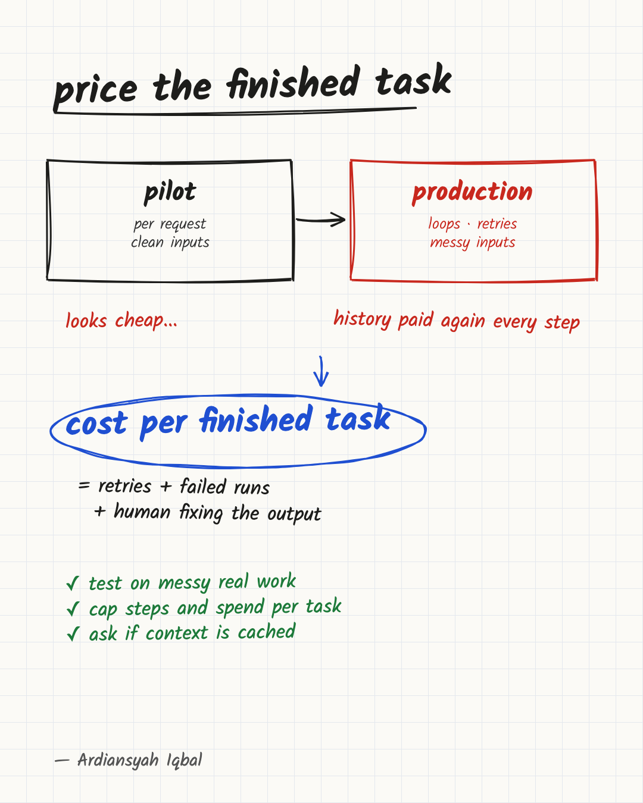

Your AI Agent Pilot Price Is Probably Too Low
Price an agent by cost per finished task, not per request, or the pilot number can mislead you.

The price of AI per word has fallen for years, and the cost of AI agents keeps surprising the teams that buy them. Both can be true at once, and the gap between them is where budgets break.
Splunk reports a figure it attributes to EY: a single customer-service interaction went from $0.04 to $1.20 over three years, while the price of each unit of AI fell. I cannot see the underlying data or what counted as one interaction, so I read it as an illustration, not a benchmark. The point it illustrates is sound. The interaction got more capable, and it stopped being one question and one answer.
If you are a founder or manager deciding whether to put an agent into a real process, this matters more than which model you choose. A pilot gives you a number, and that number can easily be too low. The reasons are mechanical, so you can plan for them. After reading this you should be able to build a cost estimate that survives contact with production, and to ask a vendor the questions that expose a weak one.
A chat answer and an agent task are different products
A chatbot takes your question, sends it to a model once and returns the answer. You pay for roughly one model call.
An agent works in a loop. It reads the request, makes a plan, uses a tool (a search, a database lookup, a calculation), reads the result, decides what to do next, and repeats until it thinks it is done. Each pass usually involves another call to the model, and each model call is billed. Tools can carry their own charges as well, such as a paid search or data service, so it helps to keep the two lines separate when you add things up.
The sources I read agree that the difference is large. Splunk, citing Gartner's 2026 work, says agents use 5 to 30 times more tokens per task than a single chatbot call. A token is the unit most hosted language models bill by, roughly a short word or part of one. Another write-up says one user request often triggers many separate model calls, not one.
I would treat that multiplier as a range, not a fact. These are secondary sources, some from vendors who sell monitoring tools, and the Gartner study itself is not linked, so I cannot tell you what it measured. But the direction is not in doubt, and the mechanism is easy to confirm by reading how any agent is built.
Why the bill grows faster than the work
Four things happen inside an agent that are easy to miss from the outside. All of them can be logged, but they do not appear on a demo screen or a monthly invoice.
The history is often paid for again at every step. Model calls are independent. Unless the system stores state somewhere else and sends only a summary, the agent resends the conversation each time: the instructions, the tool descriptions, everything found so far. Splunk puts it plainly: by step 20 you have paid for the same history 20 times. This is a design choice, not a law. Trimming, summarising old steps and caching all change the picture. But the simple version is common, and in it a task with twice as many steps costs well over twice as much, because each later step carries all the earlier ones.
Tool results are bulky. When an agent looks something up, the raw result goes into that history. A database query that returns a long record does not cost once. It rides along in every following call.
Retries are billed whether they work or not. If a tool times out or the answer fails a check, the agent tries again. The retry carries the history too, and you pay for the failed attempt as well as the good one. One analysis lists retries, handoffs between agents and long histories as the main sources of redundant passes.
Bad data makes the rest worse. If the agent searches your documents and gets poor matches, it searches again, or reasons around the gap. Splunk's article argues that noisy source data triggers retries and so more spend. I cannot verify its specific percentages, and it is a vendor post, but the logic holds: an agent working from messy files does more work for the same answer.
A worked example
Numbers make this concrete. Everything below is invented for illustration. Replace each figure with your own logs.
Say an agent handles a refund request. Its fixed instructions and tool descriptions take 3,000 tokens. Each step adds about 1,000 tokens of tool output and reasoning, and the model writes about 300 tokens per step. Assume the model charges $3 per million input tokens and $15 per million output tokens.
On a task that takes 8 steps, step one sends 3,000 tokens, step two sends 4,000, and so on up to 10,000 at step eight. The input total is 52,000 tokens, and the output is 2,400. That is about $0.156 for input and $0.036 for output, so $0.19 for the attempt. A pilot dashboard that divides by requests would stop here.
Now let the same task take 16 steps. The input total is 168,000 tokens, more than three times the 8-step figure, and the attempt costs about $0.58. Doubling the steps tripled the cost, because the history keeps growing.
Next, add failure. Suppose 20% of tasks need a full second run, so 100 tasks cost 120 runs, or about $23. Suppose only 75 of the 100 are finished correctly. The model spend per completed task is $23 divided by 75, which is $0.31. That is about 1.6 times the naive $0.19, and nothing about the agent's price per token changed.
The other 25 tasks go to a person. If each takes ten minutes of someone paid $30 an hour, that is $5 a task, or $125 for the batch. That is more than five times the model bill. Whether it belongs in "the cost of the agent" is a question of accounting, and I will come back to it. What matters here is that it exists, and a per-request view never shows it.
Why the pilot number tends to be too low
Pilots are small and controlled. A handful of employees use them carefully, on tasks chosen because they work. Production is larger and less forgiving. More people use it, they use it more often, they paste in unexpected inputs, and it runs on days nobody is watching.
Gartner, as reported by Splunk, puts pilot spend at 15 to 25% of the real bill. The article does not say how it defined a pilot or the real bill, so this shows what one analyst estimates, not that pilots in general cost a quarter of production. I would not use it as a forecast for your company.
I also would not claim that every pilot understates its cost. Nobody has shown how often that happens, and a well-run pilot on realistic work can come close. The claim I will defend is narrower: a pilot is a risk to test, because the things that raise the bill (longer tasks, messier inputs, retries, heavier users) are the things a pilot is built to avoid.
Cost also does not grow in a straight line with users. It grows with users, with tasks per user, with steps per task and with retries, all at once. A few careful pilot users cannot show you the heavy users who run the agent all day, and your budget has to be built for those users, not for the average one.
Measure the number that matters
Most teams track cost per request or cost per user, because those are what the billing dashboard shows. Both hide the problem.
Cost per request ignores how many requests it took to finish one job. Cost per user ignores whether the work was any good. An agent that costs little per call but needs several tries to get a correct result is not cheap.
The number I would anchor on is cost per successfully completed task. One analysis makes the same argument: this metric is worth anchoring on because per-prompt and per-session numbers hide failures and cleanup.
Define it before you measure it, or two people will compute two different figures:
- A task is one unit of work a customer or employee would recognise, such as "refund request resolved", not "one model call".
- Completed successfully means the output was accepted without correction, checked against a sample a person reviewed. Pick the check in advance.
- Model and tool cost is everything billed for the task, including retries and failed runs. This is the direct number.
- Human cost has two parts. Ordinary review you would do anyway on any output is not caused by the agent. Correction of an agent failure is. Count only the second, at a stated hourly rate.
I would report the direct cost and the failure-handling cost as two lines, then add them for the comparison. Mixing labor into a single figure called "cost" makes it impossible to tell whether the model got cheaper or the cleanup got faster.
"Messy real inputs", the phrase I keep using, also needs a test. I take it to mean a sample drawn at random from last quarter's actual requests, including the incomplete, duplicated and angry ones, not examples picked by the team that wants the project to succeed.
How to forecast before you commit
You can build a rough estimate in an afternoon with a spreadsheet and the pilot's logs. The method below borrows its shape from the Dev.to analysis, with my own caveats.
- Take cost per completed task from the pilot. Use the definition above, on real tasks, including the ugly ones.
- Reprice at production rates. Pilot discounts, free credits and low rate limits distort the number. Ask what you will pay at the volume you expect, and whether pricing tiers change.
- Build the volume from parts. Multiply expected users by tasks per user per month by cost per completed task. If 20 people ran the pilot and 2,000 will use the product, the user count is 100 times larger, but that is only one input. Tasks per person, the mix of easy and hard tasks, and the failure rate may all differ, so the answer is a scenario, not a forecast.
- Run a low and a high case. Change one assumption at a time, such as steps per task or retry rate, and see which one moves the total most. Add a margin for peaks sized from your own usage logs. I would not borrow a generic multiple from an article.
- Compare against the value. If the result is more than the process is worth to you, you have learned that cheaply.
Be careful with the last step. Per-task cost is not the whole decision. Quality and risk matter: an agent that costs more per task but makes fewer expensive mistakes can still win. Speed matters too, if finishing in a minute instead of a day has value for your customers. And the estimate above leaves out the cost of building, integrating and maintaining the system, which can exceed the running cost. Treat per-task cost as the number that stops you being surprised, not the number that makes the decision.
The estimate will be wrong. The aim is to be wrong in the safe direction, and to learn which assumption matters most before you sign a contract or build a team around it.
The levers that actually cut the bill
Once you know the real number, there are a few honest ways to lower it. I would try them in this order, because the early ones cost the least effort.
Cap the loop. Set a hard limit on steps and on spend per task. An agent that cannot stop itself will eventually run for an hour on a problem it cannot solve. A limit that halts it and hands the task to a person is cheaper than the runaway, and a better experience for the user.
Reuse what repeats. Instructions and reference material that are identical on every call can be cached. As one example, Anthropic's documentation says cache reads are billed at a small fraction of the normal input price, with a short default lifetime that refreshes each time the cache is used. That is one provider's pricing. Rates and behaviour differ elsewhere, so check your own vendor. Since an agent resends the same long prefix at every step, this attacks the largest repeated cost directly. Ask any vendor whether they use it and whether you see the saving.
Send easy work to cheaper models. Not every step needs the strongest model. One analysis claims small models can handle most agent tasks at far lower cost. I would not rely on that claim, since it points to enterprise deployments without a clear method. But the principle is sound: sorting a ticket does not need the same model as drafting a legal reply.
Clean the data before the agent sees it. Duplicates, empty records and malformed files make the agent search again and think harder. Fixing the source is a one-time cost that pays back on every task afterwards.
Measure per step. You cannot cut what you cannot see. Ask that spend be tracked by task, step and tool call, so a runaway loop shows up in minutes, not on the monthly invoice. This is my own recommendation, not something the sources prove: name one person who owns the cost-per-task number, or nobody will.
Questions to ask before you sign
If a vendor, or your own team, proposes an agent, these questions separate a real estimate from a hopeful one.
- What is the cost per successfully completed task, how is "completed" defined, and how was it measured?
- Was the pilot run on a random sample of real inputs, or on hand-picked examples?
- What happens to cost when volume goes up ten times? What is the cap per task?
- How many steps and retries does a typical task take, and what is the worst case?
- What share of tasks does it get wrong, and who handles those?
- Is repeated context cached, and are we billed at the cached rate?
- Can we see spend per task, or only a monthly total?
A team that cannot answer the first two has not priced the thing yet.
When the answer should be "not an agent"
All of this leads to an uncomfortable conclusion: many jobs do not need an agent.
If the steps are known in advance, write them as a fixed workflow with one or two model calls. It is cheaper, easier to test, and behaves the same way every time. An agent earns its cost when the path genuinely cannot be known beforehand: the next step depends on what the last one found, and the number of steps varies.
The test is not how long the process is. A long process can be entirely predictable, and a short one can hinge on an open-ended decision. Ask instead whether you can write down, before the task starts, which step follows each possible result. If you can, build the workflow, and call the model only where a step needs judgment. If the honest answer is "it depends on what we find", an agent may be justified.
My view is that predictable processes describe most of what businesses want to automate. The agent is the more exciting design, so teams reach for it first and pay for flexibility they never use.
Price the failures before approving the rollout
Judge an AI agent by what it costs to finish a task correctly, measured on real work at realistic volume. A price per request is an incomplete number, even when nobody meant it to mislead.
I think the teams that do well will not be the ones with the cleverest agents. They will be the ones that priced the failures, capped the loops and chose the plain workflow whenever it was enough. Founders and operations leads who are about to approve an agent project should do the cost-per-task exercise first, and make it a condition of moving from pilot to rollout.
Sources
- Splunk: The Hidden Cost of Agentic AI (a vendor post, citing Gartner and EY figures that I could not check at the original)
- Dev.to: Why AI agent pilots don't scale
- TechAhead: Inference cost explosion
- Anthropic prompt caching documentation (one provider's pricing, used as an example)